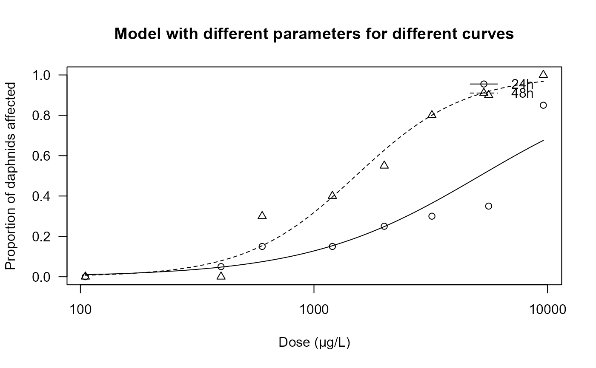
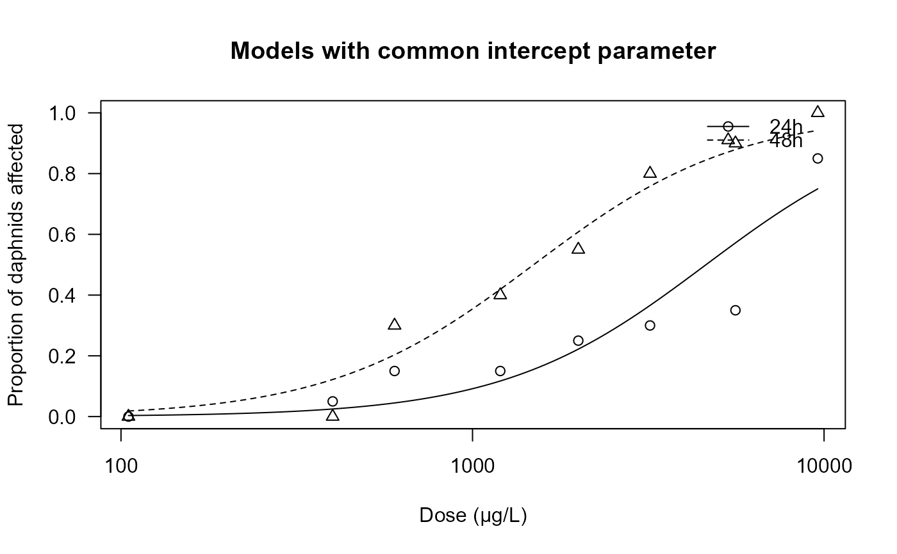

Daphnia test
daphnids.RdThe number of immobile daphnids –in contrast to mobile daphnids– out of a total of 20 daphnids was counted for several concentrations of a toxic substance.
Usage
data(daphnids)Format
A data frame with 16 observations on the following 4 variables.
dosea numeric vector
noa numeric vector
totala numeric vector
timea factor with levels
24h48h
Examples
library(drc)
## Fitting a model with different parameters
## for different curves
daphnids.m1 <- drm( data = daphnids, no/total~dose,
curveid = time, weights = total,
fct = LL.2(), type = "binomial" )
## plot models
plot(daphnids.m1, ylim = c(0, 1),
xlab = "Dose (µg/L)", ylab = "Proportion of daphnids affected",
main = "Model with different parameters for different curves")

## Goodness-of-fit test
modelFit(daphnids.m1)
#> Goodness-of-fit test
#>
#> Df Chisq value p value
#>
#> DRC model 12 13.873 0.3089
## Summary of the data
summary(daphnids.m1)
#>
#> Model fitted: Log-logistic (ED50 as parameter) with lower limit at 0 and upper limit at 1 (2 parms)
#>
#> Parameter estimates:
#>
#> Estimate Std. Error t-value p-value
#> b:24h -1.17384 0.22236 -5.2791 1.298e-07 ***
#> b:48h -1.84968 0.27922 -6.6244 3.488e-11 ***
#> e:24h 5134.03344 1056.74197 4.8584 1.184e-06 ***
#> e:48h 1509.06539 187.76008 8.0372 9.037e-16 ***
#> ---
#> Signif. codes: 0 '***' 0.001 '**' 0.01 '*' 0.05 '.' 0.1 ' ' 1
## Fitting a model with a common intercept parameter
daphnids.m2 <- drm(no/total~dose, curveid = time, weights = total,
data = daphnids, fct = LL.2(), type = "binomial",
pmodels = list(~1, ~time))
## plot models
plot(daphnids.m2, ylim = c(0, 1),
xlab = "Dose (µg/L)", ylab = "Proportion of daphnids affected",
main = "Models with common intercept parameter")

## Goodness-of-fit test
modelFit(daphnids.m2)
#> Goodness-of-fit test
#>
#> Df Chisq value p value
#>
#> DRC model 13 17.63 0.1721
## Summary of the data
summary(daphnids.m2)
#>
#> Model fitted: Log-logistic (ED50 as parameter) with lower limit at 0 and upper limit at 1 (2 parms)
#>
#> Parameter estimates:
#>
#> Estimate Std. Error t-value p-value
#> b:(Intercept) -1.49926 0.17345 -8.6436 < 2.2e-16 ***
#> e:(Intercept) 4614.39264 708.09425 6.5166 7.190e-11 ***
#> e:time48h -3122.47346 741.26254 -4.2124 2.527e-05 ***
#> ---
#> Signif. codes: 0 '***' 0.001 '**' 0.01 '*' 0.05 '.' 0.1 ' ' 1